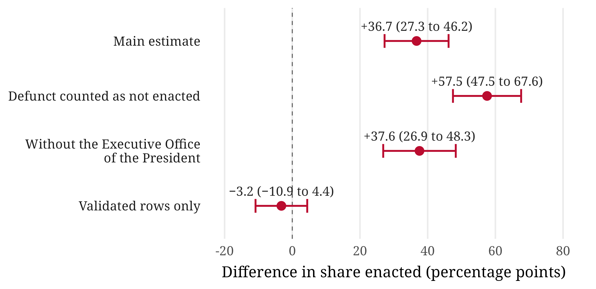

Research question and hypothesis
Does who issues an AI policy affect whether it gets enacted?
H1: AI policies issued by federal agencies are more likely to be enacted than AI bills introduced in Congress.
H0: The issuing authority makes no difference to whether an AI policy is enacted.
Literature Review and Theory
Partisan gridlock often slows or blocks legislation in Congress (Binder, 1999).
Agencies can issue rules without congressional approval, which is faster, but later presidents can revoke them. Loper Bright Enterprises v. Raimondo (2024) made agency rules even easier to challenge in court. This is shown in the AGORA dataset, as four agency AI documents were already marked as defunct following a policy shift between administrations.
Gap: No study has measured whether the issuing authority changes the likelihood that a US AI policy gets enacted.
Data
- Source
- AGORA v1.32.0 (ETO)
- Unit of analysis
- Document (long bills split by AI section)
- Coverage
- US federal (n = 417) and state (n = 289), 2017 to 2026. N = 706
- Outcome (Y)
enacted: 1 = enacted, 0 = proposed- Treatment (X)
issuer: federal agency (n = 53) vs Congress (n = 364)- Controls
- None
Key finding
Assuming Congress and agency AI documents are comparable (a reasonable assumption because they are both US federal bodies and coded by AGORA under the same rules*), we estimate that issuance by a federal agency increases the share enacted by 36.7 percentage points on average.

Figure 1. Difference in share enacted, federal agency minus Congress, with 95% confidence intervals. Source: AGORA v1.32.0.
Results and interpretation
Enacted: agencies 90.6%, Congress 53.8%.
Substantively large? Yes. Nine in 10 agency AI policies are enacted, compared to just over half of congressional bills. AI in federal governance relies on rules that are much easier to reverse than if they were statutes.
Causal? Partly. Documents were not randomly assigned, and Congress writes broader legislation while agencies issue narrower technical rules. This could be reinforced in the text analysis (r = 0.42).
Validated rows have been fully reviewed by AGORA. Almost all were enacted (Congress 159 of 160, agencies 25 of 26), leaving little room for a gap.
Method and code
*Key assumption: Congress and agency AI documents are comparable apart from who issued them, because they are both US federal bodies and coded by AGORA under the same rules.
Statistical model
Enactedi = α + β Agencyi + εi
difference-in-means, 95% CI, two-sided test at 5%
Text analysis
corpus → tokens → counts
word shares by issuer, cor.test(); tf-idf in appendix


We excluded the 420 Defunct rows because they are neither enacted nor proposed. Counting them as not enacted widens the gap to +57.5 points (Figure 1).
There are 125 other rows issued by bodies outside of our three groups, including US cities, other countries and private companies.
Policy implications
Because federal AI policy relies on agency rules rather than statutes, these policies remain vulnerable to reversal. Congress should codify AI standards into statute to make them durable across administrations, while federal agencies should prioritise Congress-backed rulemaking for high-stakes AI rules that are at potential risk.
Limitations and next steps
- 148 of the 364 Congress rows are NDAA sections, all enacted; without them the gap is +68.3 points.
- 318 of 706 (45%) of AGORA’s policy summaries contain machine-generated text that has not been reviewed, so they would need fact-checking.
Next step: Focus on one issuer over time and compare before and after a new administration.
References
Arnold, Z., Melot, J., Enwereazu, O., Schiff, D. S., Schiff, K. J. and Girard, T. (2026). AGORA Dataset (Version 1.32.0). Zenodo. https://doi.org/10.5281/zenodo.21964209
Binder, S. A. (1999). The Dynamics of Legislative Gridlock, 1947–96. American Political Science Review, 93(3), 519–533. https://doi.org/10.2307/2585572
Llaudet, E. and Imai, K. (2022). Data Analysis for Social Science. Princeton University Press.
Loper Bright Enterprises v. Raimondo, 603 U.S. 369 (2024).